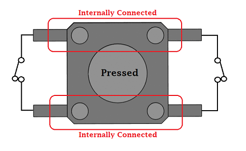
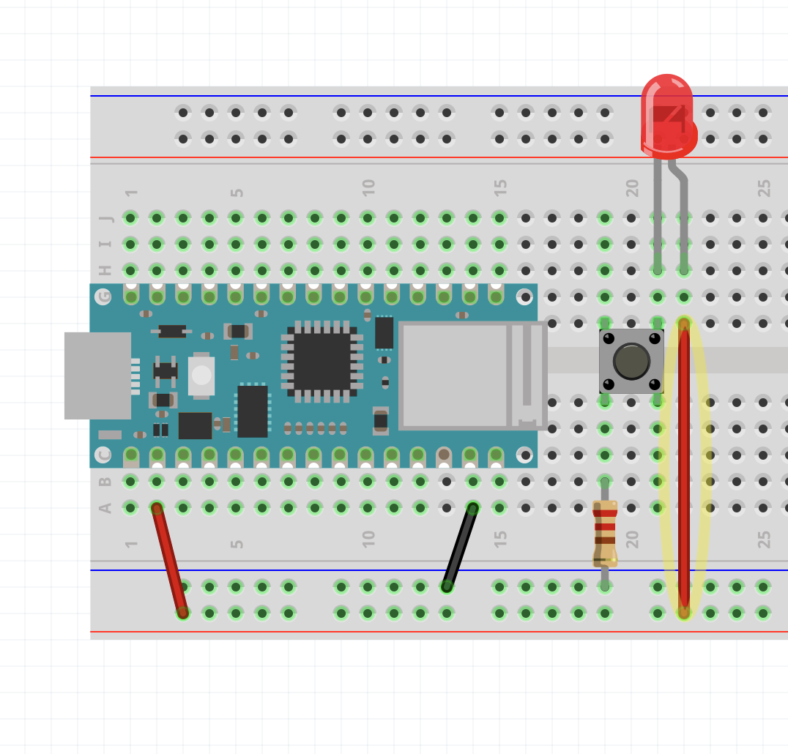
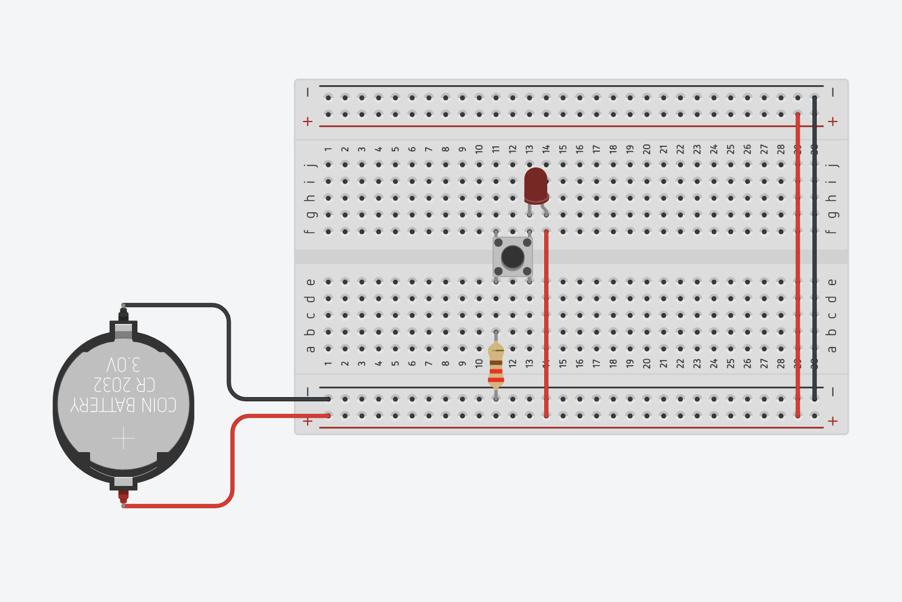
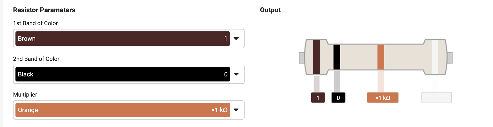
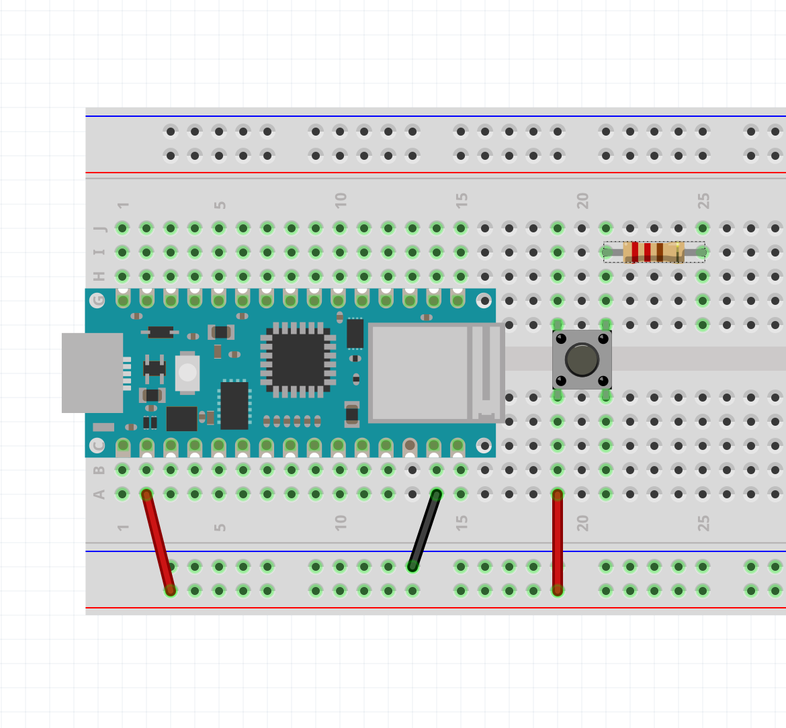
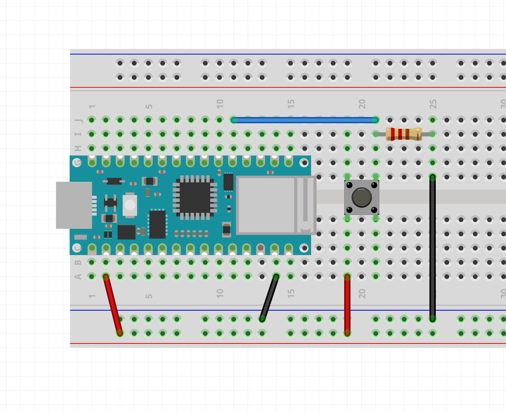
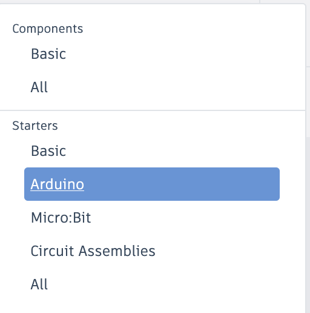
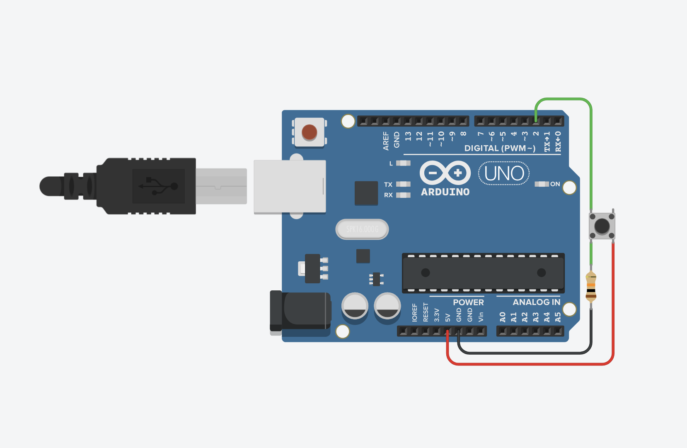
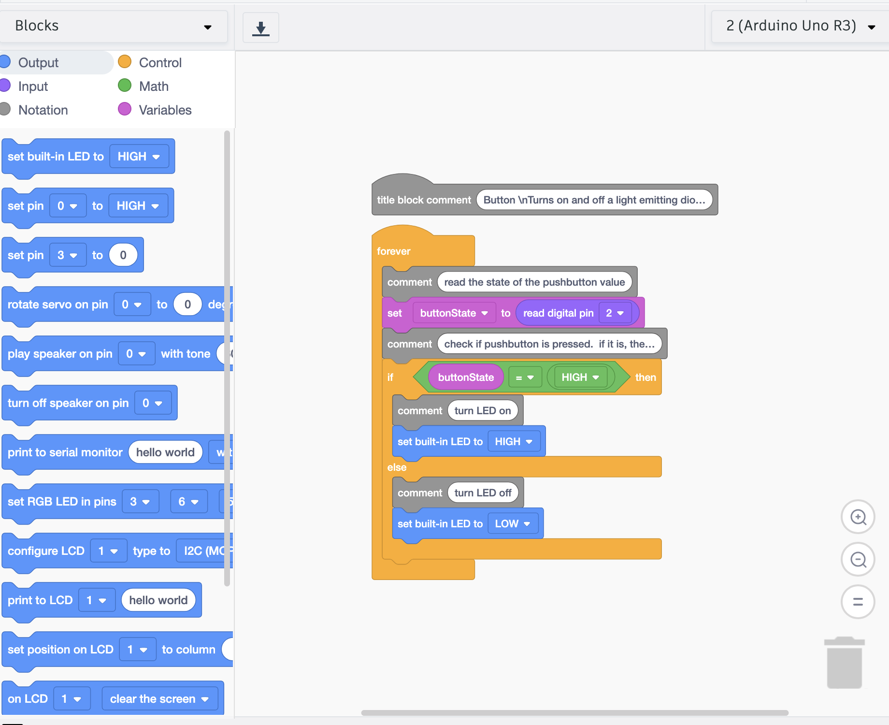

Button
How does a button work?
The button is just a simple way of completing or breaking a circuit with the simple act of “pushing” or “pressing” a button.
You could just manually join or unjoin two bare wires together to do this, but a button makes this convenient.
Often electronics kits come with a cheap button that looks like this:

But it can take many forms and sizes.

Generally, the pinout looks something like this:

Here is a screenshot in Fritzing to show that the pins in red are connected whether the button is pressed or not. Same with the blue pins.

Circuit Demonstration
Let’s do a circuit that turns an LED on when we press the button without any programming.

First I connect the button so that it crosses over the middle of the breadboard. It might be easier to think of this middle line as a river, and the button as a bridge. Also notice that if you were to squish the button like a bug, the legs spread out to resemble more like a bridge.
Next I placed an LED on one side of the button, with one leg (the cathode) connected to the right side of the bridge.
On the left side of the bridge I placed the current limiting resistor for the LED. This is connected to ground.

The last step would be to connect the positive rail to the anode.
Pressing the button should now light up the LED. This is because when you press the button, you are completing the circuit. When you release, you are breaking the circuit.

By the way, because we have power going through each side of the power rails, an alternative way of wiring this is like this:

Do you see why this completes the circuit?
The Button Sketch
Go to:
File > Examples > 02.Digital > Button
This is Button.ino.
Of course we should always look at the link provided in the block comment:
https://www.arduino.cc/en/Tutorial/BuiltInExamples/Button

It is using the UNO, but the wiring is pretty much the same.
We are connecting one side of the switch to (+) (In our case, 3.3V).

And the other side to a 10k Ohm Resistor.
WarningThe images show a resistor with color bands of a 220 ohm resistor, but it should be 10k.


This other side of the button is ALSO connected to digital pin 2.

Lastly, the other side of the resistor is connected to Ground.

Pressing the button should turn on the built-in LED. You can confirm this by connecting an LED to pin 13 like how we did in the Blink example.
In TinkerCAD
In TinkerCAD, it comes with some premade circuits with the Arduino Code.
You can find it in the dropbar menu on the right hand side:

This is the Button example:

Redrawn to fit in a breadboard like we did with the Nano:

To find the code editor:

The first thing you will see is a block code editor similar to the Scratch Programming Language.

To go to the text version of the code, like what we would see in the Arduino IDE. Select “Text” from this dropbar menu:

You can enter the Button example here:

And click “Start Simulation” to see if it works.